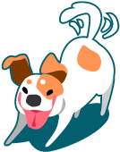

Amigo fiel
Refugios
Refugios
Somos un grupo de personas que trabaja para promover y lograr la tenencia responsable de animales domésticos, y adhiere a toda medida que procure el bienestar animal en general.
Para esto, contamos con esta página web a la que acaba de acceder y desde ella facilitamos la adopción de perros y gatos rescatados de la calle.
Estos son alojados provisoriamente, y rehabilitados si la situación lo requiere, en nuestro Refugio de tránsito, ubicado en distintas zonas de la Provincia de Buenos Aires. Disponemos en los refugios de instalaciones especialmente diseñadas para albergarlos, personal para su atención permanente y servicio médico veterinario propio.
¡Vos podés ser parte del cambio!
Según varias definiciones que encontramos en la web, "Voluntario" es "la persona que por elección propia dedica parte de su tiempo a la acción solidaria, altruista, sin recibir remuneración por esto". Para nosotros es algo más, ser voluntario es dar toda nuestra fortaleza, ánimo, la voluntad; pero más que eso, es un estilo de vida.
Llega un día en la vida en la cual nos preguntamos qué podemos hacer por alguien más. A todos los voluntarios nos pasó levantarnos un día y decirnos “hoy comienzo a luchar por los animales, hoy comienzo a luchar por aquellos por los cuales nadie habla, por aquellos olvidados por muchos”.
Entonces activamos y nuestra vida cambia por completo: se llena de miradas de agradecimiento, de esperanza por un mundo mejor, de “movidas de rabitos”, de orejas levantadas y de amor incondicional. Ésta es también tu oportunidad de comenzar a vivir ésta experiencia inigualable que es ayudar a los animales, aportar tu gran granito de arena para lograr un futuro sin abandono ni maltrato animal. Como voluntario estarás colaborando en el tiempo que puedas con diferentes actividades: eventos, jornadas de trabajo en el refugio, colectas, rescates y muchísimas cosas más. Ser voluntario de los Refugios es pertenecer a un enorme grupo de gente con tus mismos principios, con tus mismos ideales.
Si vivís en Buenos Aires, Argentina, y llegó tu momento de activar escribinos ahora que te contamos todo.